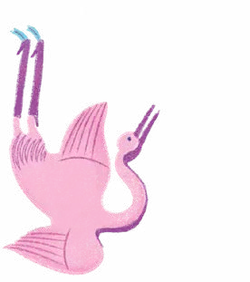
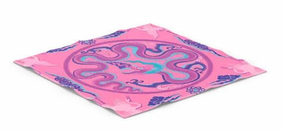
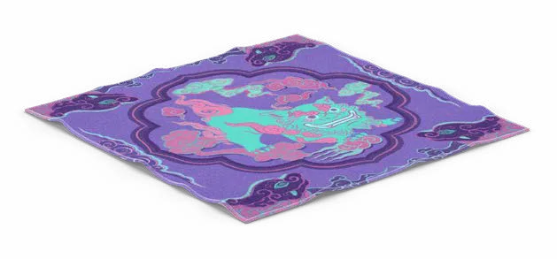

PHAM Nhu Quynh
Contact
PHAM Nhu Quynh
Contact
“Carré Hermès” CollectionIllustration, Scarf design, Vietnamese architecture
Collection « Carré Hermès »Illustration, design de carrés de soie, architecture vietnamienne
“« CarréVietnamese
Folk PatternMotifs populaires
vietnamiens

Hermès” »
Collection
Brief
Design a collection of three Hermès scarf motifs (20×20 cm each) unified by a common theme, combining storytelling, cultural reference, and artistic refinement in line with Hermès’ design philosophy.
Concevoir une collection de trois motifs de carrés Hermès (20 × 20 cm chacun) réunis autour d’un thème commun, alliant narration, référence culturelle et raffinement artistique, dans l’esprit de la philosophie créative d’Hermès.




Intention
Titled “Vietnamese Folk Patterns”, this scarf collection reinterprets traditional Vietnamese architectural motifs through a contemporary lens. Each design captures fragments of cultural heritage, rendered with refined lines and rich symbolism. The three scarf designs focus on: 1. Longevity Symbol, 2. Lý Dynasty Dragon, 3. The Nghê Guardian Beast.
Intitulée « Motifs populaires vietnamiens », cette collection de carrés réinterprète les motifs de l’architecture traditionnelle vietnamienne avec un regard contemporain. Chaque dessin saisit un fragment du patrimoine culturel, rendu par des lignes raffinées et une symbolique riche. Les trois carrés s’articulent autour de : 1. le symbole de longévité, 2. le dragon de la dynastie Lý, 3. le Nghê, bête gardienne.
The three scarvesLes trois carrés


Lý Dynasty dragonLe dragon de la dynastie Lý
The design of the scarf channels the power and elegance of the Lý Dynasty dragon, a symbol of imperial strength and spiritual ascension. The flowing, flame-like lines of the dragon are embedded within a rich ornamental frame, echoing ancient carvings while keeping a balanced, modern aesthetic.
Ce carré convoque la puissance et l’élégance du dragon de la dynastie Lý, symbole de force impériale et d’élévation spirituelle. Ses lignes fluides, semblables à des flammes, s’inscrivent dans un riche cadre ornemental qui évoque les sculptures anciennes tout en gardant un équilibre résolument moderne.
The design features the Nghê, a mythical guardian beast often seen in temple gates and ancient pagodas. Combining features of a lion, dog, and dragon, the Nghê represents protection and purity. In this scarf, its presence is both majestic and playful, surrounded by protective motifs and flowing lines reminiscent of stone carvings.
Ce motif met en scène le Nghê, bête gardienne mythique que l’on retrouve aux portes des temples et des pagodes anciennes. Mi-lion, mi-chien, mi-dragon, le Nghê incarne la protection et la pureté. Sur ce carré, sa présence est à la fois majestueuse et espiègle, entourée de motifs protecteurs et de lignes fluides qui rappellent la pierre sculptée.
“Nghê” — a mythical guardian« Nghê », gardien mythique


“THỌ” — Longevity symbol« THỌ », symbole de longévité
This design focuses on the “Thọ” (Longevity) character, framed by mythological creatures and floral borders. It reflects timeless values and sacred geometry, rendered in a bold, graphic style inspired by ancient imperial tiles.
Ce dessin s’organise autour du caractère « Thọ » (longévité), encadré de créatures mythologiques et de bordures florales. Il exprime des valeurs intemporelles et une géométrie sacrée, dans un style graphique affirmé inspiré des tuiles impériales anciennes.